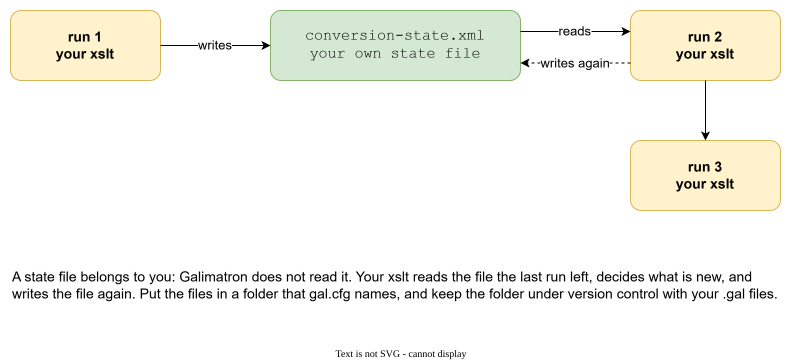

Custom states¶
Galimatron keeps one state for you: the .gal files. Sometimes your XSLT needs a memory of its own: "which conversions did I already write", "what was the last build number", "which names have I already put in the dictionary". That memory is a custom state.
The problem¶
An XSLT is a function. It reads its input and writes its output, and forgets. A generator needs a memory in three cases:
- A counter that must go on from where it stopped.
- A record of what it generated, so it does not overwrite a file that a person edited by hand.
- A list that grows: names, ids, a dictionary.
Galimatron does not need a database for this, and your XSLT does not need a side channel. Your state lives in files next to your .gal files, and goes through version control with them.

A state belongs to you. Galimatron does not read it, and does not check it. Your XSLT reads what the last run left, decides what is new, and writes it again.
Two places for a state¶
1. In tags¶
The simplest state is data. The counter in the hello project is a tag:
version 0
{
counter = { "1" };
}
Each run, a language XSLT reads it, adds one, and Galimatron writes it back into the .gal file. Advantages:
- It is versioned like the rest of the data, and it shows in the
history. - It can be important: then a hash closes it with the version.
- The Wizard can create and edit it (
wizard create tag ...). - The compiled view carries it, so a post XSLT can read it without a file.
The Example: messages that grow keeps its dictionary in tags too: an aggregate dictionary with one entry tag per name. The language XSLT fill-dictionary.xsl adds an entry for every tag name that has none, and a person can edit the text of an entry next to it. A name already in the dictionary stays: the text a person wrote is not overwritten.
Use tags when the state is a part of the description.
2. In a file¶
When the state is a record about the output, not about the description, a file is better. The messages example keeps conversion-state.xml:
<conversion-state>
<made from="v1" to="v3"/>
<made from="v2" to="v3"/>
<made from="v1" to="v4"/>
...
</conversion-state>
Each made says "the conversion from v1 to v3 was generated". The generator writes an empty conversion file for a pair that is not recorded, and a person fills it in. On the next run the pair is recorded, so the file is not touched, and the person's work is safe.
A state file needs three things from you:
-
A place. A store in
gal.cfg, so the XSLT can write it:json { "store-dir" : "actual_gal/", "store-dir-string-alias" : "conversion-state", "extentions" : [".xml"], "delete-if-not-rewrited" : true } -
A write. The XSLT writes it with the alias:
xml <xsl:result-document href="@@conversion-state@@conversion-state.xml@@" method="xml" indent="yes"> <conversion-state> <xsl:copy-of select="$old-state/conversion-state/made"/> <!-- ... and one made for each pair written in this run --> </conversion-state> </xsl:result-document> -
A read. The XSLT finds the file by a path that Galimatron gives it, in
input_gal_dir:```xml
On the first run the file does not exist yet, so
doc-availableguards the read.
Read and write are different URIs
Saxon does not allow reading and writing the same URI in one run. The write uses the alias form (@@conversion-state@@...) and the read uses a real file URI, so it works. If the state is stored in the output gal folder (as in the example, whose folders are apart for testing), read both the input and the output copy, because a step may have a state in either. In a project with one gal folder there is only one copy.
Where to put the file¶
Put it in a folder that gal.cfg names, and commit it with the .gal files. A state file is part of the project's memory: lose it, and the generator forgets what it wrote.
Note
Do not let a store delete your state. delete-if-not-rewrited: true removes files in the store that the run did not rewrite. For a state that you write on every run this is a correct cleanup. For files that a person edits (the conversions of the example) use false.
What to remember when you design a state¶
- Decide from the data, not from the clock. Do not let a time change the output between two runs of the same input.
- Grow, do not rewrite. A state that only adds is easy to review in a diff.
- Let a person edit, and respect it. A generator that overwrites a hand-written file is worse than none. Record what you wrote, and skip it next time.
- Keep it small. The state travels with the project.